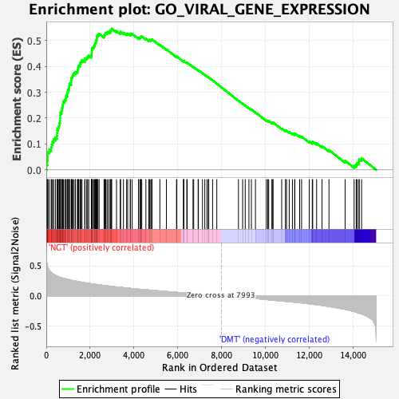
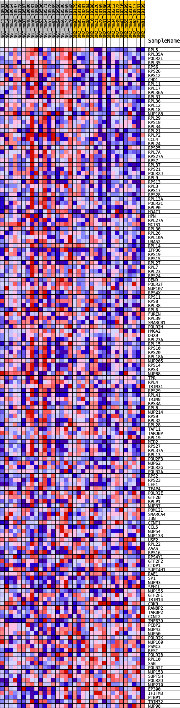
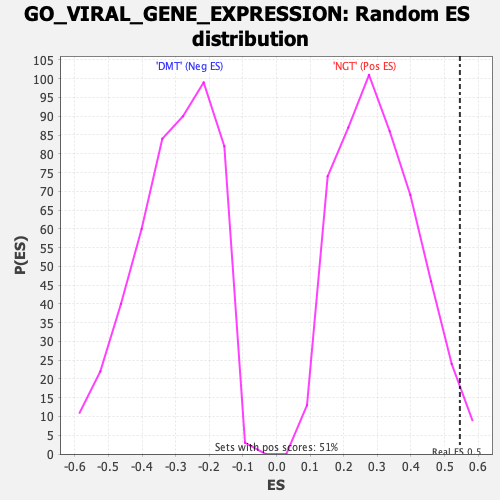

| | | Dataset | Diabetes_collapsed_symbols.Diabetes.cls#NGT_versus_DMT |
| Phenotype | Diabetes.cls#NGT_versus_DMT |
| Upregulated in class | NGT |
| GeneSet | GO_VIRAL_GENE_EXPRESSION |
| Enrichment Score (ES) | 0.5455612 |
| Normalized Enrichment Score (NES) | 1.7960778 |
| Nominal p-value | 0.017681729 |
| FDR q-value | 0.16584748 |
| FWER p-Value | 0.863 |
Table: GSEA Results Summary

Fig 1: Enrichment plot: GO_VIRAL_GENE_EXPRESSION
Profile of the Running ES Score & Positions of GeneSet Members on the Rank Ordered List
| PROBE | DESCRIPTION
(from dataset) | GENE SYMBOL | GENE_TITLE | RANK IN GENE LIST | RANK METRIC SCORE | RUNNING ES | CORE ENRICHMENT | | 1 | RPL5 | na | | | 13 | 0.595 | 0.0200 | Yes |
| 2 | RPL35A | na | | | 49 | 0.505 | 0.0354 | Yes |
| 3 | POLR2L | na | | | 65 | 0.483 | 0.0513 | Yes |
| 4 | RPL35 | na | | | 66 | 0.481 | 0.0682 | Yes |
| 5 | RPS6 | na | | | 133 | 0.426 | 0.0787 | Yes |
| 6 | RPS26 | na | | | 222 | 0.391 | 0.0865 | Yes |
| 7 | RPS12 | na | | | 250 | 0.384 | 0.0981 | Yes |
| 8 | CHD1 | na | | | 286 | 0.374 | 0.1089 | Yes |
| 9 | RPL11 | na | | | 337 | 0.360 | 0.1182 | Yes |
| 10 | RPL17 | na | | | 416 | 0.342 | 0.1250 | Yes |
| 11 | RPL36A | na | | | 491 | 0.328 | 0.1315 | Yes |
| 12 | RPL31 | na | | | 494 | 0.328 | 0.1429 | Yes |
| 13 | RPL36 | na | | | 498 | 0.326 | 0.1541 | Yes |
| 14 | RPL12 | na | | | 535 | 0.320 | 0.1629 | Yes |
| 15 | RPL18 | na | | | 580 | 0.315 | 0.1710 | Yes |
| 16 | NUP188 | na | | | 594 | 0.313 | 0.1811 | Yes |
| 17 | RPL29 | na | | | 628 | 0.309 | 0.1897 | Yes |
| 18 | RPS18 | na | | | 631 | 0.308 | 0.2004 | Yes |
| 19 | RPL34 | na | | | 637 | 0.308 | 0.2109 | Yes |
| 20 | RPL21 | na | | | 642 | 0.307 | 0.2214 | Yes |
| 21 | RPLP2 | na | | | 698 | 0.301 | 0.2282 | Yes |
| 22 | CCL4 | na | | | 708 | 0.299 | 0.2381 | Yes |
| 23 | RPL24 | na | | | 734 | 0.297 | 0.2469 | Yes |
| 24 | RPS25 | na | | | 761 | 0.295 | 0.2555 | Yes |
| 25 | RPL7A | na | | | 778 | 0.293 | 0.2647 | Yes |
| 26 | RPS27A | na | | | 841 | 0.287 | 0.2706 | Yes |
| 27 | RPS7 | na | | | 891 | 0.282 | 0.2772 | Yes |
| 28 | RPL37 | na | | | 901 | 0.281 | 0.2865 | Yes |
| 29 | RPS21 | na | | | 958 | 0.276 | 0.2924 | Yes |
| 30 | POLR2J | na | | | 963 | 0.276 | 0.3019 | Yes |
| 31 | RPL9 | na | | | 988 | 0.274 | 0.3098 | Yes |
| 32 | RPS13 | na | | | 1032 | 0.269 | 0.3164 | Yes |
| 33 | RPL3 | na | | | 1043 | 0.268 | 0.3251 | Yes |
| 34 | RPS17 | na | | | 1058 | 0.267 | 0.3335 | Yes |
| 35 | RPS28 | na | | | 1139 | 0.261 | 0.3373 | Yes |
| 36 | RPL13A | na | | | 1140 | 0.260 | 0.3465 | Yes |
| 37 | POLR2C | na | | | 1149 | 0.260 | 0.3550 | Yes |
| 38 | RPLP0 | na | | | 1185 | 0.257 | 0.3617 | Yes |
| 39 | HDAC1 | na | | | 1210 | 0.255 | 0.3690 | Yes |
| 40 | HPN | na | | | 1268 | 0.251 | 0.3740 | Yes |
| 41 | RPL27A | na | | | 1331 | 0.247 | 0.3785 | Yes |
| 42 | MCTS1 | na | | | 1419 | 0.240 | 0.3811 | Yes |
| 43 | RPL30 | na | | | 1441 | 0.238 | 0.3881 | Yes |
| 44 | RPL26 | na | | | 1454 | 0.237 | 0.3956 | Yes |
| 45 | RPL10A | na | | | 1473 | 0.236 | 0.4027 | Yes |
| 46 | UBA52 | na | | | 1535 | 0.232 | 0.4067 | Yes |
| 47 | RPL14 | na | | | 1552 | 0.230 | 0.4137 | Yes |
| 48 | ZFP36 | na | | | 1591 | 0.228 | 0.4192 | Yes |
| 49 | RPS19 | na | | | 1631 | 0.225 | 0.4244 | Yes |
| 50 | RPS15 | na | | | 1759 | 0.217 | 0.4235 | Yes |
| 51 | RPL27 | na | | | 1761 | 0.217 | 0.4311 | Yes |
| 52 | RPL7 | na | | | 1846 | 0.212 | 0.4329 | Yes |
| 53 | RPL23 | na | | | 1886 | 0.210 | 0.4376 | Yes |
| 54 | RPS24 | na | | | 1940 | 0.207 | 0.4413 | Yes |
| 55 | DENR | na | | | 2054 | 0.200 | 0.4408 | Yes |
| 56 | POLR2F | na | | | 2066 | 0.199 | 0.4470 | Yes |
| 57 | NUP107 | na | | | 2072 | 0.199 | 0.4537 | Yes |
| 58 | RPS4X | na | | | 2078 | 0.198 | 0.4603 | Yes |
| 59 | RPS11 | na | | | 2082 | 0.198 | 0.4670 | Yes |
| 60 | RPS8 | na | | | 2106 | 0.197 | 0.4724 | Yes |
| 61 | RPL38 | na | | | 2162 | 0.195 | 0.4755 | Yes |
| 62 | RPL6 | na | | | 2191 | 0.193 | 0.4805 | Yes |
| 63 | FURIN | na | | | 2220 | 0.192 | 0.4853 | Yes |
| 64 | RPL39 | na | | | 2237 | 0.191 | 0.4910 | Yes |
| 65 | SMARCB1 | na | | | 2265 | 0.190 | 0.4958 | Yes |
| 66 | POLR2H | na | | | 2273 | 0.190 | 0.5020 | Yes |
| 67 | HMGA2 | na | | | 2305 | 0.188 | 0.5065 | Yes |
| 68 | DHX9 | na | | | 2310 | 0.188 | 0.5128 | Yes |
| 69 | RPL23A | na | | | 2324 | 0.187 | 0.5185 | Yes |
| 70 | RPL15 | na | | | 2358 | 0.186 | 0.5228 | Yes |
| 71 | RPS10 | na | | | 2411 | 0.183 | 0.5258 | Yes |
| 72 | RPS20 | na | | | 2637 | 0.172 | 0.5167 | Yes |
| 73 | RPL18A | na | | | 2657 | 0.171 | 0.5214 | Yes |
| 74 | NUP205 | na | | | 2685 | 0.169 | 0.5256 | Yes |
| 75 | RPS14 | na | | | 2716 | 0.168 | 0.5295 | Yes |
| 76 | RPS3 | na | | | 2774 | 0.166 | 0.5315 | Yes |
| 77 | NUP88 | na | | | 2835 | 0.163 | 0.5332 | Yes |
| 78 | TPR | na | | | 2916 | 0.160 | 0.5334 | Yes |
| 79 | RPL4 | na | | | 2920 | 0.160 | 0.5388 | Yes |
| 80 | TRIM31 | na | | | 2966 | 0.158 | 0.5413 | Yes |
| 81 | RPS29 | na | | | 2986 | 0.157 | 0.5456 | Yes |
| 82 | RPL41 | na | | | 3205 | 0.148 | 0.5361 | No |
| 83 | TRIM8 | na | | | 3376 | 0.142 | 0.5297 | No |
| 84 | RPS3A | na | | | 3392 | 0.141 | 0.5336 | No |
| 85 | RPL8 | na | | | 3522 | 0.136 | 0.5298 | No |
| 86 | NUP214 | na | | | 3666 | 0.130 | 0.5247 | No |
| 87 | RPS9 | na | | | 3714 | 0.128 | 0.5260 | No |
| 88 | RPL32 | na | | | 3834 | 0.123 | 0.5224 | No |
| 89 | RPL28 | na | | | 3836 | 0.123 | 0.5267 | No |
| 90 | TAF11 | na | | | 3921 | 0.121 | 0.5253 | No |
| 91 | TARDBP | na | | | 4208 | 0.110 | 0.5099 | No |
| 92 | RPL19 | na | | | 4271 | 0.108 | 0.5096 | No |
| 93 | MID2 | na | | | 4297 | 0.107 | 0.5117 | No |
| 94 | RPS27 | na | | | 4308 | 0.107 | 0.5148 | No |
| 95 | RPL37A | na | | | 4358 | 0.106 | 0.5152 | No |
| 96 | RPL13 | na | | | 4546 | 0.100 | 0.5061 | No |
| 97 | POU2F3 | na | | | 4676 | 0.096 | 0.5008 | No |
| 98 | NUP62 | na | | | 4710 | 0.095 | 0.5020 | No |
| 99 | POLR2G | na | | | 4768 | 0.093 | 0.5014 | No |
| 100 | POLR2A | na | | | 4807 | 0.092 | 0.5021 | No |
| 101 | RPS2 | na | | | 4829 | 0.091 | 0.5039 | No |
| 102 | RPS23 | na | | | 5184 | 0.080 | 0.4829 | No |
| 103 | LEF1 | na | | | 5483 | 0.071 | 0.4654 | No |
| 104 | TFAP4 | na | | | 5944 | 0.058 | 0.4366 | No |
| 105 | POLR2E | na | | | 5960 | 0.057 | 0.4376 | No |
| 106 | GTF2B | na | | | 6261 | 0.048 | 0.4191 | No |
| 107 | RPLP1 | na | | | 6272 | 0.048 | 0.4201 | No |
| 108 | NUP37 | na | | | 6280 | 0.047 | 0.4213 | No |
| 109 | POM121 | na | | | 6413 | 0.044 | 0.4140 | No |
| 110 | SMARCA4 | na | | | 6433 | 0.043 | 0.4143 | No |
| 111 | JUN | na | | | 6697 | 0.036 | 0.3979 | No |
| 112 | CCNT1 | na | | | 6728 | 0.035 | 0.3971 | No |
| 113 | CCL5 | na | | | 6930 | 0.030 | 0.3847 | No |
| 114 | NUP54 | na | | | 6944 | 0.029 | 0.3848 | No |
| 115 | NUP133 | na | | | 7131 | 0.024 | 0.3732 | No |
| 116 | USF2 | na | | | 7235 | 0.021 | 0.3670 | No |
| 117 | RPL22 | na | | | 7332 | 0.018 | 0.3612 | No |
| 118 | AAAS | na | | | 7396 | 0.017 | 0.3576 | No |
| 119 | RPS16 | na | | | 7416 | 0.016 | 0.3568 | No |
| 120 | RPS4Y1 | na | | | 7590 | 0.011 | 0.3456 | No |
| 121 | GTF2F2 | na | | | 7783 | 0.006 | 0.3330 | No |
| 122 | CTDP1 | na | | | 8771 | -0.023 | 0.2675 | No |
| 123 | SUPT4H1 | na | | | 8962 | -0.029 | 0.2558 | No |
| 124 | RAE1 | na | | | 9080 | -0.032 | 0.2490 | No |
| 125 | SP1 | na | | | 9249 | -0.037 | 0.2391 | No |
| 126 | NUP93 | na | | | 9362 | -0.041 | 0.2330 | No |
| 127 | SEH1L | na | | | 9547 | -0.046 | 0.2222 | No |
| 128 | NUP155 | na | | | 10042 | -0.062 | 0.1913 | No |
| 129 | GTF2F1 | na | | | 10107 | -0.064 | 0.1892 | No |
| 130 | TRIM14 | na | | | 10152 | -0.066 | 0.1886 | No |
| 131 | CDK9 | na | | | 10295 | -0.071 | 0.1816 | No |
| 132 | RANBP2 | na | | | 10344 | -0.072 | 0.1809 | No |
| 133 | TARBP2 | na | | | 10346 | -0.073 | 0.1834 | No |
| 134 | CCNT2 | na | | | 10745 | -0.087 | 0.1597 | No |
| 135 | ZNF639 | na | | | 10916 | -0.093 | 0.1515 | No |
| 136 | PCBP2 | na | | | 10966 | -0.094 | 0.1516 | No |
| 137 | NUP43 | na | | | 11089 | -0.098 | 0.1468 | No |
| 138 | NUP50 | na | | | 11234 | -0.103 | 0.1408 | No |
| 139 | POLR2K | na | | | 11339 | -0.107 | 0.1376 | No |
| 140 | NUP160 | na | | | 11342 | -0.107 | 0.1412 | No |
| 141 | PSMC3 | na | | | 11564 | -0.115 | 0.1304 | No |
| 142 | REST | na | | | 11652 | -0.119 | 0.1288 | No |
| 143 | POLR2B | na | | | 12003 | -0.133 | 0.1099 | No |
| 144 | RPL10 | na | | | 12139 | -0.139 | 0.1058 | No |
| 145 | SSB | na | | | 12160 | -0.140 | 0.1093 | No |
| 146 | POLR2I | na | | | 12339 | -0.149 | 0.1026 | No |
| 147 | NUP153 | na | | | 12586 | -0.161 | 0.0917 | No |
| 148 | SUPT5H | na | | | 12903 | -0.178 | 0.0768 | No |
| 149 | POLR2D | na | | | 13639 | -0.225 | 0.0354 | No |
| 150 | NUP210 | na | | | 14050 | -0.261 | 0.0170 | No |
| 151 | EP300 | na | | | 14144 | -0.271 | 0.0203 | No |
| 152 | IFITM3 | na | | | 14189 | -0.277 | 0.0271 | No |
| 153 | PTBP1 | na | | | 14276 | -0.288 | 0.0314 | No |
| 154 | TRIM32 | na | | | 14279 | -0.288 | 0.0414 | No |
| 155 | NUP98 | na | | | 14391 | -0.303 | 0.0446 | No |
Table: GSEA details [plain text format]

Fig 2: GO_VIRAL_GENE_EXPRESSION
Blue-Pink O' Gram in the Space of the Analyzed GeneSet

Fig 3: GO_VIRAL_GENE_EXPRESSION: Random ES distribution
Gene set null distribution of ES for GO_VIRAL_GENE_EXPRESSION